6. 附录
本文将介绍如何在Windows 7至10系统上安装本文档中使用的工具。读者可根据自身环境进行调整。
6.1. 安装 IDE Arduino
Arduino的官方网站是[http://www.arduino.cc/]。您可以在该网站上找到适用于Arduino [http://arduino.cc/en/Main/Software]的开发板IDE：
 |  |
下载的文件 [1] 是一个压缩包，解压后将生成 [2] 的文件结构。 双击可执行文件 [3] 即可启动 IDE。
6.2. 安装 Arduino 驱动程序
为了使 IDE 能与 Arduino 通信，Arduino 必须被主机 PC 识别。为此，可按以下步骤操作：
- 将 Arduino 连接到主机计算机的 USB 端口；
- 系统将尝试查找新设备 USB 的驱动程序。由于无法找到，请指定驱动程序位于磁盘的 <arduino>/drivers 路径下，其中 <arduino> 是 Arduino 的安装目录。
6.3. IDE的测试
要测试 IDE，可按以下步骤操作：
- 启动 IDE；
- 使用USB数据线将Arduino连接至PC。目前暂不连接网卡；
 |  |
- 在 [1] 中，选择连接到端口 USB 的 Arduino 板类型；
- 在 [2] 中，指定 Arduino 连接的端口 USB。要确定该端口，请先断开 Arduino 连接并记录端口号。重新连接后再次检查端口：新增的端口即为 Arduino 所在的端口；
运行IDE中包含的部分示例：
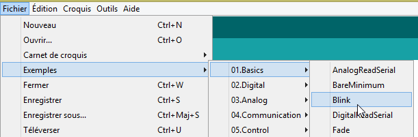 |
示例已加载并显示：
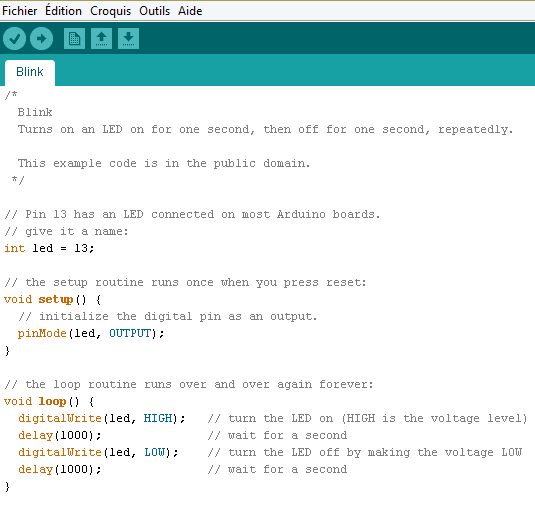 |
IDE附带的示例极具教学价值，且注释详尽。Arduino代码采用C语言编写，由两个截然不同的部分组成：
- 一个名为 [setup] 的函数，该函数在应用程序启动时（即应用程序被“上传 ”至 Arduino 时，或者当应用程序已存在于 Arduino 上且按下 [Reset] 按钮时。此处用于放置应用程序的初始化代码；
- 一个持续执行的函数（无限循环）。应用程序的核心功能应置于此处。
在此，
- 函数 [setup] 将第 13 号引脚配置为输出；
- 函数 [loop] 反复控制其开关：LED 每秒闪烁一次。
1  |
点击按钮 [1]，即可将显示的程序传输（上传）至 Arduino。传输完成后，程序开始运行，第 13 号 LED 灯将无限期地闪烁。
6.4. Arduino的网络连接
Arduino（或多个Arduino）与主机PC必须位于同一私有网络中：
 |
如果只有一个Arduino，可以通过一根简单的RJ 45电缆将其连接到PC主机。 如果有多个Arduino，则需通过迷你集线器将PC主机与Arduinos置于同一网络中。
我们将 PC 主机和 Arduino 置于 192.168.2.x 私有网络中。
- Arduino的IP地址由源代码设定。我们将探讨具体方法；
- 主机 IP 的地址可通过以下方式设置：
- 选择 [Panneau de configuration\Réseau et Internet\Centre Réseau et partage] 选项：
 |
- 在 [1] 中，点击链接 [Connexion au réseau local]
 |  |
- 在 [2] 中，查看连接属性；
- 在 [4] 中，查看连接的属性 IP v4 [3]；
 |
- 在 [5] 中，为主机分配地址 IP [192.168.2.1]；
- 在 [6] 中，将子网掩码 [255.255.255.0] 分配给网络；
- 在 [7] 中确认所有设置。
6.5. 测试网络应用程序
使用 IDE 加载示例 [Exemples / Ethernet / WebServer]：
/*
Web Server
A simple web server that shows the value of the analog input pins.
using an Arduino Wiznet Ethernet shield.
Circuit:
* Ethernet shield attached to pins 10, 11, 12, 13
* Analog inputs attached to pins A0 through A5 (optional)
created 18 Dec 2009
by David A. Mellis
modified 9 Apr 2012
by Tom Igoe
*/
#包含 <SPI.h>
#包含 <Ethernet.h>
// 请在下方为您的控制器输入 MAC 地址和 IP 地址。
// IP 地址取决于您的本地网络：
byte mac[] = {
0xDE, 0xAD, 0xBE, 0xEF, 0xFE, 0xED };
IPAddress ip(192,168,1, 177);
// 初始化以太网服务器库
// 使用您希望使用的 IP 地址和端口
// （HTTP 的默认端口为 80）：
EthernetServer server(80);
void setup() {
// 打开串行通信并等待端口打开：
Serial.begin(9600);
while (!Serial) {
; // 等待串行端口连接。仅 Leonardo 需要
}
// 启动以太网连接和服务器：
Ethernet.begin(mac, ip);
server.begin();
Serial.print("server is at ");
Serial.println(Ethernet.localIP());
}
void loop() {
// 监听传入的客户端
EthernetClient client = server.available();
if (client) {
Serial.println("new client");
// HTTP请求以空行结束
boolean currentLineIsBlank = true;
while (client.connected()) {
if (client.available()) {
char c = client.read();
Serial.write(c);
// 如果已到达行尾（收到换行
// 且该行内容为空，则表示 HTTP 请求已结束，
// 因此可以发送回复
if (c == '\n' && currentLineIsBlank) {
// 发送标准 HTTP 响应头
client.println("HTTP/1.1 200 OK");
client.println("Content-Type: text/html");
client.println("Connection: close");
client.println();
client.println("<!DOCTYPE HTML>");
client.println("<html>");
// 添加一个 meta refresh 标签，使浏览器每 5 秒重新加载一次：
client.println("<meta http-equiv=\"refresh\" content=\"5\">");
// 输出每个模拟输入引脚的值
for (int analogChannel = 0; analogChannel < 6; analogChannel++) {
int sensorReading = analogRead(analogChannel);
client.print("analog input ");
client.print(analogChannel);
client.print(" is ");
client.print(sensorReading);
client.println("<br />");
}
client.println("</html>");
break;
}
if (c == '\n') {
// 你正在开始新的一行
currentLineIsBlank = true;
}
else if (c != '\r') {
// 当前行已收到一个字符
currentLineIsBlank = false;
}
}
}
// 给网页浏览器留出接收数据的时间
delay(1);
// 关闭连接：
client.stop();
Serial.println("client disconnected");
}
}
该应用程序在第 25 行地址 IP 处，于 80 端口（第 30 行）创建了一个 Web 服务器。 第 23 行中的地址 MAC 是 Arduino 网络卡上指定的地址 MAC。
函数 [setup] 用于初始化 Web 服务器：
- 第 34 行：初始化应用程序将用于记录日志的串行端口。我们将跟踪这些日志；
- 第 41 行：初始化节点 TCP-IP（IP，端口）；
- 第 42 行：第 30 行中的服务器在此网络节点上启动；
- 第 43-44 行：记录 Web 服务器的地址 IP；
函数 [loop] 实现了 Web 服务器：
- 第50行：如果客户端连接到Web服务器，则返回[server].available；否则返回null；
- 第51行：如果客户不是null；
- 第 55 行：只要客户端保持连接；
- 第 56 行：如果客户端发送了字符，则 [client].available 为真。这些字符存储在一个缓冲区中。只要该缓冲区不为空，[client].available 即为真；
- 第 57 行：读取客户端发送的字符；
- 第 58 行：该字符被回显在日志控制台上；
- 第 62 行：在 HTTP 协议中，客户端与服务器交换文本行。
- 客户端向Web服务器发送HTTP请求，发送一系列以空行结尾的文本行，
- 随后服务器向客户端发送响应并关闭连接；
第 62 行，服务器对从客户端接收到的 HTTP 报头不做任何处理。它只是等待空行：即仅包含 \n 字符的一行；
- 第64-67行：服务器向客户端发送HTTP协议的标准文本行。这些行以空行结尾（第67行）；
- 从第 68 行开始，服务器向客户端发送文档。该文档由服务器动态生成，采用 HTML 格式（第 68-69 行）；
- 第71行：一条特殊的HTML格式行，要求客户端浏览器每5秒刷新一次页面。因此，浏览器将每5秒请求同一页面；
- 第73-80行：服务器向客户端浏览器发送Arduino的6个模拟输入值；
- 第81行：关闭HTML文档；
- 第82行：退出第55行中的while循环；
- 第 97 行：关闭与客户端的连接；
- 第 98 行：将事件记录到日志控制台中；
- 第 100 行：返回 loop 函数的开头：服务器将重新开始监听客户端。我们提到客户端浏览器会每 5 秒重新请求同一页面。服务器将随时准备再次响应。
请修改第25行的代码，将其替换为您的Arduino的地址IP，例如：
将程序上传至 Arduino。启动日志控制台（Ctrl-M）（大写 M）：
 |  |
- 在日志控制台中显示为 [1]。服务器已启动；
- 在 [2] 中，使用浏览器访问 Arduino 的地址 IP。此处 [192.168.2.2] 默认被解析为 [http://198.162.2.2:80]；
- 在 [3] 中，显示了 Web 服务器发送的信息。如果查看浏览器页面的源代码，会得到：
这里可以看到服务器发送的文本行。在 Arduino 端，日志控制台显示了客户端发送的内容：
- 第2-9行：标准HTTP头部；
- 第10行：作为结尾的空行。
请仔细研究这个示例。它将帮助您理解 TP 中使用的 Arduino 编程。
6.6. aJson库
在即将编写的 TP 中，Arduino 会与客户端交换 jSON 格式的文本行。 默认情况下，Arduino 未包含用于管理 jSON 的库。 我们将安装可在 URL [https://github.com/interactive-matter/aJson] 上获取的 aJson 库。
 |  |
- 在 [1] 中，请下载 Github 仓库的压缩包；
- 解压文件夹，并将文件夹 [aJson-master] [2] 复制到文件夹 [<arduino>/libraries] [3] 中，其中 <arduino> 是IDE Arduino 的安装目录；
 |  |  |
- 在 [4] 中，将该文件夹重命名为 [aJson]；
- 将其内容重命名为 [5]。
现在，运行 IDE Arduino：
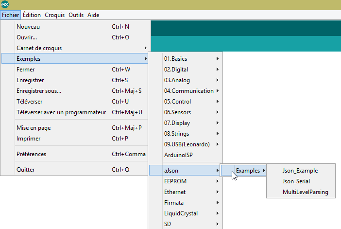 |
请确认示例文件夹中现已包含 aJson 库的示例程序。运行并研究这些示例。
6.7. Android平板电脑
这些示例已在 Samsung Galaxy Tab 2 平板电脑上经过测试。
若要在平板电脑上测试示例，您需先在开发机上安装该设备的驱动程序。三星 Galaxy Tab 2 平板电脑的驱动程序可在 URL [http://www.samsung.com/fr/support/usefulsoftware/KIES/] 中找到：
 |
要测试示例，您需要将平板电脑连接到网络（可能是 Wi-Fi），并了解其在该网络上的 IP 地址。操作步骤如下（Samsung Galaxy Tab 2）：
- 打开平板电脑；
- 在平板电脑的可用应用程序中（右上角）查找名为 [paramètres] 且带有齿轮图标的应用程序；
- 在左侧区域，开启Wi-Fi；
- 在右侧区域，选择一个 Wi-Fi 网络；
- 连接网络后，轻点所选网络。此时将显示平板电脑的 IP 地址。请记录下来，后续会用到；
仍在 [Paramètres] 应用中，
- 在左侧选择 [Options de développement] 选项（位于选项列表的最下方）；
- 请确认右侧的“[Débogage USB]”选项已勾选。
要返回菜单，请点击底部状态栏中间的房子图标。同样在底部状态栏中，
- 最左侧的图标是“返回”按钮：点击后可返回上一视图；
- 最右侧的图标是任务管理图标。您可以查看并管理平板电脑在特定时间执行的所有任务；
使用随附的 USB 数据线将平板电脑连接至 PC。
将Wi-Fi适配器插入PC上的任意一个USB接口，然后连接到与平板电脑相同的Wi-Fi网络。 完成上述操作后，在 DOS 窗口中输入以下命令：
您的 PC 拥有两张网卡，因此有两个 IP 地址：
- 第 9 行显示的是 PC 在有线网络上的地址；
- 第17行显示的是PC在无线网络上的地址；
请记下这两条信息，后续会用到。当前配置如下：
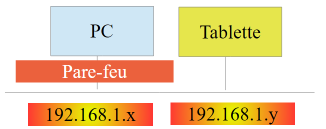 |
平板电脑需要连接到您的 PC。该设备通常受防火墙保护，阻止任何外部元素与 PC 建立连接。因此，您需要禁用防火墙。 请使用 [Panneau de configuration\Système et sécurité\Pare-feu Windows] 选项进行设置。有时还需禁用杀毒软件设置的防火墙，具体取决于您使用的杀毒软件。
现在，在您的 PC 上，使用命令 [ping 192.168.1.y] 检查与平板电脑的网络连接，其中 [192.168.1.y] 是平板电脑的 IP 地址。 您应看到类似以下内容：
第 4-7 行表明，地址为 IP 的平板电脑已响应 [192.168.1.y] 命令。
6.8. 安装 JDK
在 URL [http://www.oracle.com/technetwork/java/javase/downloads/index.html]（2016年6月）中，JDK 是最新版本。 此后将 JDK 的安装目录命名为 <jdk-install>。
 |
6.9. 安装 Genymotion 模拟器管理器
[Genymotion]公司提供了一款高性能的Android模拟器。该模拟器可在URL和[https://cloud.genymotion.com/page/launchpad/download/]（2016年6月）版本中使用。
您需要注册才能获取个人版。请下载产品 [Genymotion] 及虚拟机 VirtualBox：

接下来我们将 [Genymotion] 的安装文件夹称为 <genymotion-install>。运行 [Genymotion]。然后下载一个平板电脑镜像：
 |
- 在 [1] 中，添加 [2] 中描述的虚拟终端；
 |
- 在 [3] 中，配置该终端；
 |  |
- 为 [4-5]，根据您的环境自定义终端；
- 在 [6] 中，启动虚拟终端；
如果一切正常，将显示 Android 模拟器窗口：

有时，Android 模拟器无法启动。在 Windows 系统上，可以检查以下两点：
- 确认虚拟机 [Hyper-V] 未安装。如有必要，请卸载 [1-2]；
 |  |
- 然后在配置向导中检查 [Centre Réseau et partage] [1]：
 |
 |  |
- 在 [3] 中，选择与 VirtualBox 虚拟机关联的卡；
 |
- 请确认在 [6] 中，VirtualBox 的驱动程序已勾选。对所有与 VirtualBox 虚拟机关联的网卡重复此操作；
6.10. 安装 Maven
Maven 是一款用于管理 Java 项目依赖关系的工具，功能远不止于此。它可在 URL [http://maven.apache.org/download.cgi] 中获取。
 |
下载并解压该压缩包。我们将 Maven 的安装目录命名为 <maven-install>。
 |
- 在 [1] 中，文件 [conf / settings.xml] 用于配置 Maven；
其中包含以下内容：
<!-- localRepository
| The path to the local repository maven will use to store artifacts.
|
| Default: ${user.home}/.m2/repository
<localRepository>/path/to/local/repo</localRepository>
-->
如果像我一样，您的 {user.home} 路径中包含空格（例如 [C:\Users\Serge Tahé]），第 4 行中的默认值可能会导致某些软件出现问题。此时，我们需要修改为如下内容：
<!-- localRepository
| The path to the local repository maven will use to store artifacts.
|
| Default: ${user.home}/.m2/repository
<localRepository>/path/to/local/repo</localRepository>
-->
<localRepository>D:\Programs\devjava\maven\.m2\repository</localRepository>
并在第7行避免使用包含空格的路径。
6.11. 安装 IDE Android Studio
IDE Android Studio Community Edition 可在 URL [https://developer.android.com/studio/index.html]（2016年6月）中获取：
 |
安装 IDE 并启动它。按照 [1-8] 中的步骤，安装 SDK 管理器中后续示例所使用的组件。 如果您决定安装更新版本的组件，Android Studio 可能会提示警告，指出示例配置引用了 SDK 中的组件，而这些组件在您的环境中并不存在。此时，您可以按照 IDE 中的建议进行操作。
 |
 |
 |
- 在 [9] 中，请查看软件包的详细信息：
 |
- 在上述 [11] 中，示例使用了 SDK Build-Tools 23.0.3；
- 在下面的 [9-12] 中，请指定您安装 [Genymotion] 模拟器管理器的文件夹；
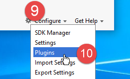 |  |
- 在 [13-18] 中，配置项目的默认类型；
 |  |
- 在 [17] 中，默认值通常是正确的；
- 在 [18] 中，请确保您使用的是 JDK 1.8 版本；
下文在 [19-26] 中，将默认针对英语的拼写检查功能关闭；
 |  |
 |
- 在下面的 [27-28] 中，选择您想要的快捷键类型。您可以保留 IntelliJ 的默认设置，或选择您更习惯的 IDE 中的其他设置；
 |
- 在下方，在 [29-30] 中，显示代码的行号；
 |
- 下文，在 [31-34] 中，说明您希望在启动 IDE 时如何处理第一个项目，以及后续项目；
 |
在 Android 2.1（2016 年 5 月）系统中，[Instant Run] 技术有时会出现问题。因此，我们在本文档中已将其禁用：
 |  |
- 在 [3-4] 中，所有功能均已禁用；
6.12. 示例的使用
示例的 Android Studio 项目可在 ICI| 处获取。请下载它们。
 |
示例项目基于以下版本构建：
- JDK 1.8；
- Android SDK Platform 23 用于运行；
以下工具：
 |
如果您的环境与上述环境不符，则需要更改项目配置。这可能会相当麻烦。首先，重建一个与上述环境类似的工作环境可能更为简单。
启动 Android Studio，然后打开项目 [exemple-07]，例如：
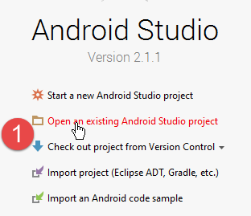 |  |
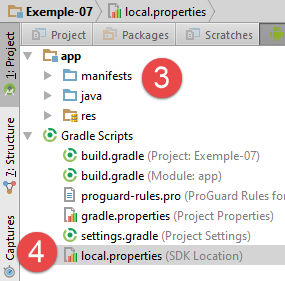 |
- 在 [1-3] 中，打开项目 [Exemple-07]；
- 在 [4] 中，会验证文件 [local.properties]；
 |  |
- 在上述第 11 行中，填写 Android 管理器 <sdk-manager-install> 的位置。您可以通过以下步骤找到该位置：
 |
本文档中的所有示例都是通过 [build.gradle] [1-2] 文件配置的 Gradle 项目：
 |
示例 07 中的 [build.gradle] 文件如下：
buildscript {
repositories {
mavenCentral()
mavenLocal()
}
dependencies {
// 替换为当前版本的 Android 插件
classpath 'com.android.tools.build:gradle:2.1.0'
// 自 Android 的 Gradle 插件 0.11 起，必须使用 android-apt >= 1.3
classpath 'com.neenbedankt.gradle.plugins:android-apt:1.8'
}
}
apply plugin: 'com.android.application'
apply plugin: 'android-apt'
def AAVersion = '4.0.0'
dependencies {
apt "org.androidannotations:androidannotations:$AAVersion"
compile "org.androidannotations:androidannotations-api:$AAVersion"
compile 'com.android.support:appcompat-v7:23.4.0'
compile 'com.android.support:design:23.4.0'
compile fileTree(dir: 'libs', include: ['*.jar'])
}
repositories {
jcenter()
}
apt {
arguments {
androidManifestFile variant.outputs[0].processResources.manifestFile
resourcePackageName android.defaultConfig.applicationId
}
}
android {
compileSdkVersion 23
buildToolsVersion "23.0.3"
defaultConfig {
applicationId "android.exemples"
minSdkVersion 15
targetSdkVersion 23
versionCode 1
versionName "1.0"
}
buildTypes {
release {
minifyEnabled false
proguardFiles getDefaultProguardFile('proguard-android.txt'), 'proguard-rules.pro'
}
}
compileOptions {
sourceCompatibility JavaVersion.VERSION_1_7
targetCompatibility JavaVersion.VERSION_1_7
}
}
根据您构建的 Android 环境（SDK 和相关工具），您可能需要修改第 8、21、22、38、39 行的版本号。Android Studio 会提供建议以协助您，最简单的方法是遵循这些建议。
[build.gradle] 文件中的元素还可以通过另一种方式访问：
 |  |
- [3] 的各个选项卡采用了 [build.gradle] 文件中的不同值。因此，可以通过这种方式构建该文件，从而避免 [build.gradle] 文件中的语法问题；
另一个需要检查的点是 JDK，它被 IDE 和 [5] 所使用：
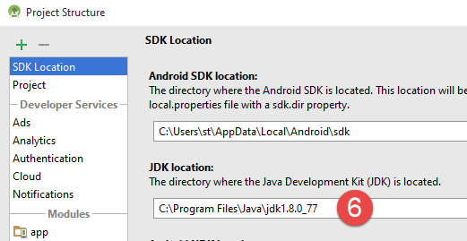 |
在 [6] 中，请检查 JDK。
所有示例均为包含待下载依赖项的 Gradle 项目。为此，可按以下步骤操作：
 |   |
- 在 [5] 中编译项目；
当项目无错误后，需创建一个运行配置 [1-8]：
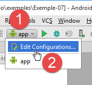 |  |
- 在 [8] 中，可以指定始终使用同一终端进行运行。通常会勾选此选项，以避免每次运行时都需要指定终端。在此，我们不勾选该选项，因为我们将测试不同的 Android 设备；
- 创建好运行配置后，启动 Android 模拟器管理器 [1-3]；
 |  |
- 如果 Android 模拟器无法启动，请检查第 6.11 节中提到的要点；
要在模拟器上启动应用程序，请按以下步骤操作 [1-4]：
 |  |
- 在 [2] 中，您应能看到之前启动的模拟器；
 |
- 在 [5] 中，显示的是模拟器呈现的画面；
现在将一台安卓平板电脑连接到PC设备的USB端口，并在平板上运行该应用程序：
 |
- 在 [6] 中，选择该 Android 平板电脑并测试应用程序。
在 [7] 中，我们拥有预定义的虚拟终端。我们将学习如何添加和删除它们。
 |
 |
在上图的屏幕截图中，所列终端均运行 API 22 版本。由于我们要使用 API 23 版本，因此将全部删除这些终端。请按照 [2-3] 中的步骤操作以删除终端。

 |
- 在 [4-5] 中，我们添加了一台平板电脑；
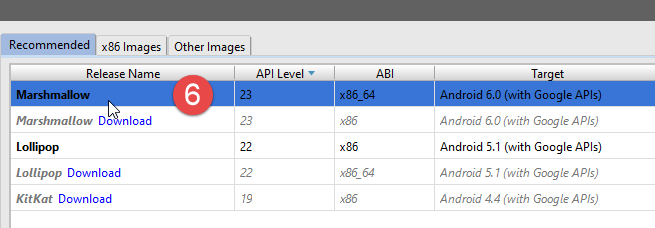 |
- 在 [6] 中，选择 API。上图中我们选择 API 23 用于 64 位 Windows；
 |
- 在 [7] 中，显示配置摘要；
- 在 [8] 中，可以进行更高级的虚拟终端配置；
 |
向导完成后，创建的终端将显示在 [9] 中。
完成上述操作后，若重新运行 [Exemple-07]，将显示如下窗口：
 |
- 在 [1] 中，新的虚拟终端将显示出来；
- 在 [2] 中，可以创建新的虚拟终端；
请进行测试以确定最适合您设备的虚拟终端。本文中的示例主要使用 Genymotion 模拟器进行测试。
无论选择哪个虚拟终端，日志都会显示在名为 [Logcat] [1-2] 的窗口中：

请定期查看这些日志。导致程序崩溃的异常信息将在此处显示。
您也可以使用常规调试工具对程序进行调试：
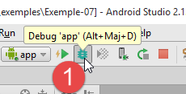 |  |
- 在 [2] 中，单击目标行左侧的列即可设置断点。再次单击将取消该断点；
 |
- 在 [3] 中，在断点处执行：
- [F6]，若该行包含方法调用，则执行该行而不进入方法；
- [F5]，若该行包含方法调用，则进入方法执行该行，
- [F8]，继续执行至下一个断点；
- [Ctrl-F2]，用于停止调试；
6.13. 安装 Chrome 插件 [Advanced Rest Client]
本文使用谷歌Chrome浏览器（http://www.google.fr/intl/fr/chrome/browser/）。我们将为其添加扩展程序[Advanced Rest Client] 。操作步骤如下：
- 使用Chrome浏览器访问[Google Web store]网站（https://chrome.google.com/webstore）；
- 搜索 [Advanced Rest Client] 应用：
 |
- 此时该应用程序即可下载：
 |
- 要获取该应用，您需要创建一个 Google 账户。随后 [Google Web Store] 会要求确认 [1]：
 |  |
- 在 [2] 中，已添加的扩展程序可在选项 [Applications] [3] 中找到。该选项会显示在您在浏览器中创建的每个新标签页（CTRL-T）上。
6.14. Java中 jSON的管理
[Spring MVC]框架在开发者完全不知情的情况下，会调用jSON库。为了说明什么是jSON （JavaScript 对象表示法），我们在此展示一个程序，该程序将对象序列化为 jSON，并通过反序列化生成的 jSON 字符串来还原初始对象。
“Jackson”库可用于构建：
- 对象的 jSON 字符串：new ObjectMapper().writeValueAsString(object)；
- 根据字符串 jSON 创建对象：new ObjectMapper().readValue(jsonString, Object.class)。
这两种方法都可能引发 IOException 异常。以下是一个示例。
 |
上述项目是一个Maven项目，其中包含以下[pom.xml]文件；
<?xml version="1.0" encoding="UTF-8"?>
<project xmlns="http://maven.apache.org/POM/4.0.0"
xmlns:xsi="http://www.w3.org/2001/XMLSchema-instance"
xsi:schemaLocation="http://maven.apache.org/POM/4.0.0 http://maven.apache.org/xsd/maven-4.0.0.xsd">
<modelVersion>4.0.0</modelVersion>
<groupId>istia.st.pam</groupId>
<artifactId>json</artifactId>
<version>1.0-SNAPSHOT</version>
<dependencies>
<dependency>
<groupId>com.fasterxml.jackson.core</groupId>
<artifactId>jackson-databind</artifactId>
<version>2.3.3</version>
</dependency>
</dependencies>
</project>
- 第 12-16 行：引入 'Jackson' 库的依赖项；
[Personne] 类如下：
package istia.st.json;
public class Personne {
// 数据
private String nom;
private String prenom;
private int age;
// 构造函数
public Personne() {
}
public Personne(String nom, String prénom, int âge) {
this.nom = nom;
this.prenom = prénom;
this.age = âge;
}
// 签名
public String toString() {
return String.format("Personne[%s, %s, %d]", nom, prenom, age);
}
// getter 和 setter
...
}
类 [Main] 如下所示：
package istia.st.json;
import com.fasterxml.jackson.databind.ObjectMapper;
import java.io.IOException;
import java.util.HashMap;
import java.util.Map;
public class Main {
// 序列化/反序列化工具
static ObjectMapper mapper = new ObjectMapper();
public static void main(String[] args) throws IOException {
// 创建人员
Personne paul = new Personne("Denis", "Paul", 40);
// JSON 显示
String json = mapper.writeValueAsString(paul);
System.out.println("Json=" + json);
// 根据 JSON 实例化 Person
Personne p = mapper.readValue(json, Personne.class);
// 显示人员
System.out.println("Personne=" + p);
// 一个数组
Personne virginie = new Personne("Radot", "Virginie", 20);
Personne[] personnes = new Personne[]{paul, virginie};
// JSON 显示
json = mapper.writeValueAsString(personnes);
System.out.println("Json personnes=" + json);
// 字典
Map<String, Personne> hpersonnes = new HashMap<String, Personne>();
hpersonnes.put("1", paul);
hpersonnes.put("2", virginie);
// 显示 JSON
json = mapper.writeValueAsString(hpersonnes);
System.out.println("Json hpersonnes=" + json);
}
}
执行该类将显示以下屏幕内容：
从该示例中可以得出：
- [ObjectMapper] 对象是 jSON 转换所必需的 / 对象：第 11 行；
- 转换 [Personne] --> jSON：第 17 行；
- 转换 jSON --> [Personne]：第 20 行；
- 由这两个方法触发的异常 [IOException]：第 13 行。
6.15. 安装 [WampServer]
[WampServer] 是一套用于在 Windows 机器上基于 PHP / MySQL / Apache 进行开发的软件包。 我们将仅将其用于 SGBD 和 MySQL。
 |  |
- 在 [WampServer] [1] 的网站上，选择合适的版本 [2]，
- 下载的可执行文件是一个安装程序。安装过程中会要求提供各种信息。这些信息与MySQL无关，因此可以忽略。 安装完成后将显示 [3] 窗口。运行 [WampServer]，
 |  |
- 在 [4] 中，[WampServer] 的图标将安装在屏幕右下角的任务栏中 [4]，
- 点击该图标后，将显示 [5] 菜单。该菜单用于管理 Apache 服务器以及 SGBD 和 MySQL。 要管理该服务器，请使用选项 [PhpPmyAdmin]，
- 此时将显示如下窗口，

关于 [PhpMyAdmin] 的使用，本文将不作过多赘述。具体使用方法请参阅文档说明。